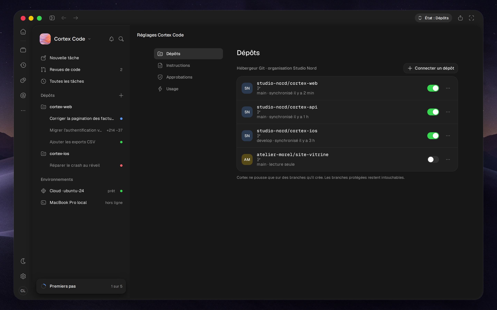

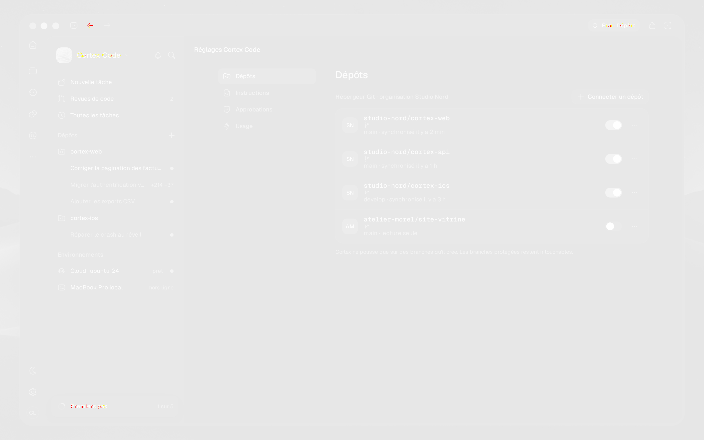

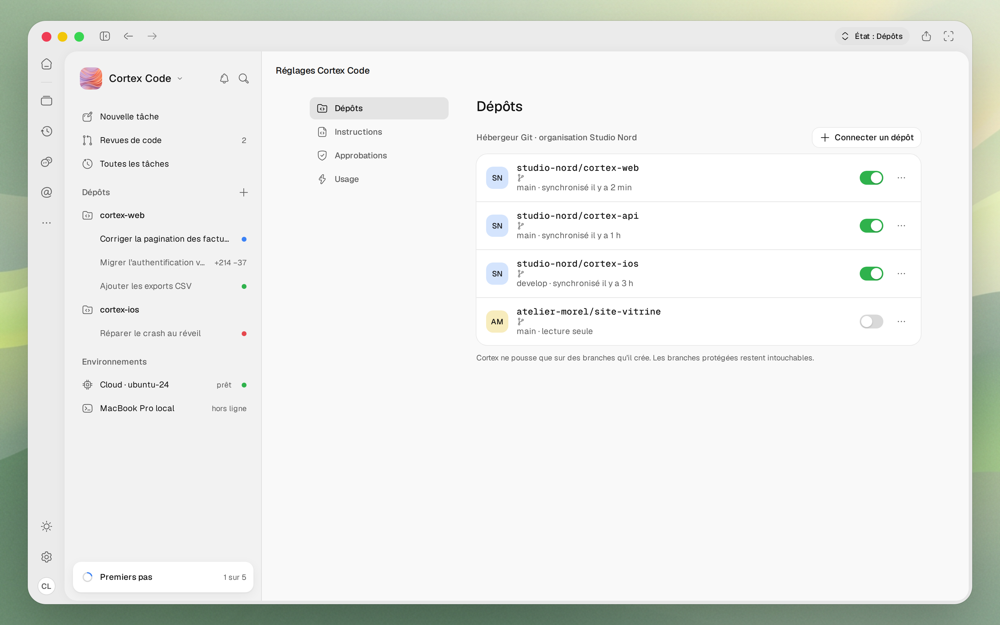


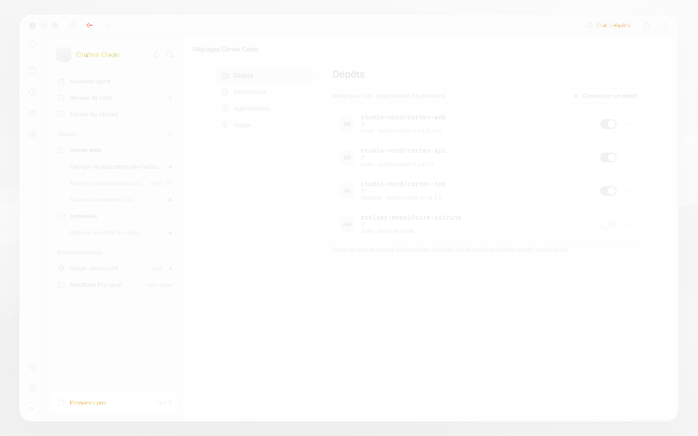

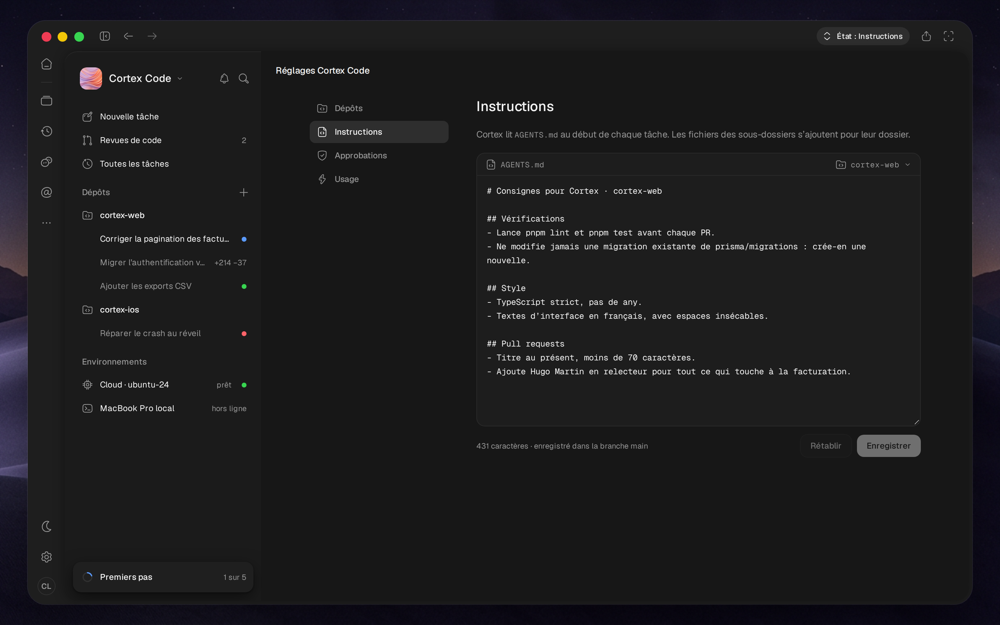


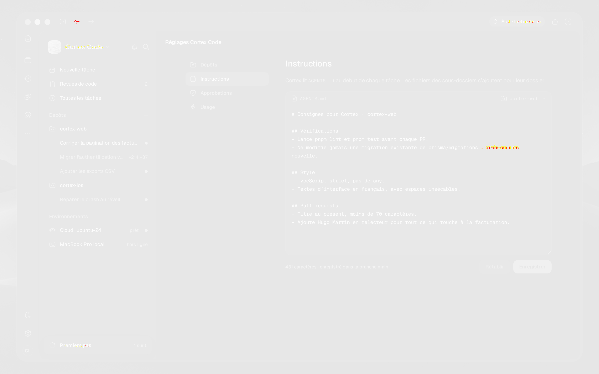

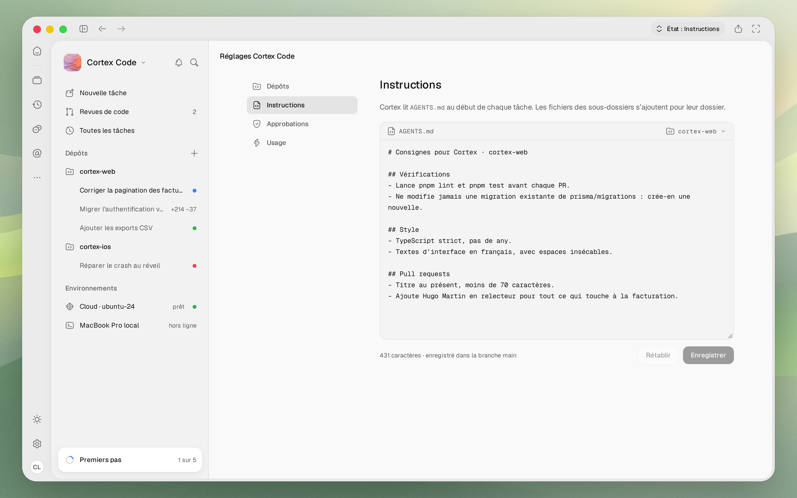


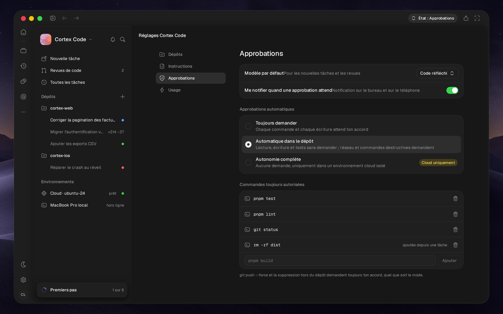

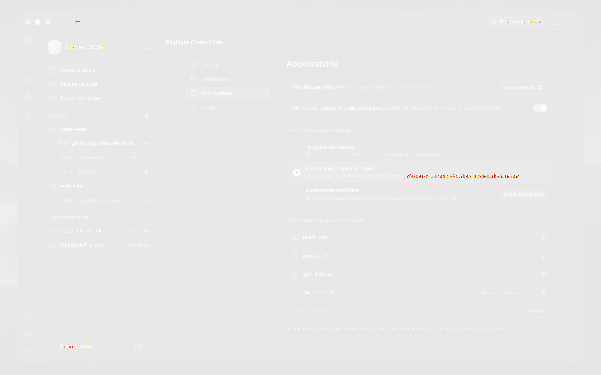


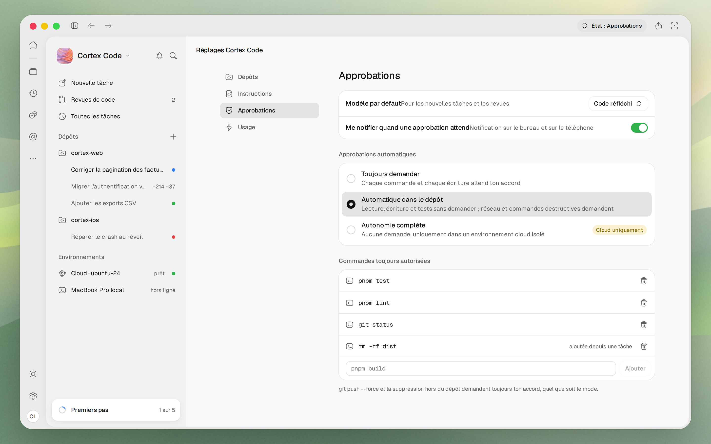

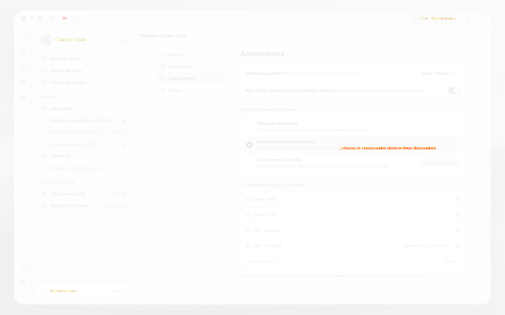


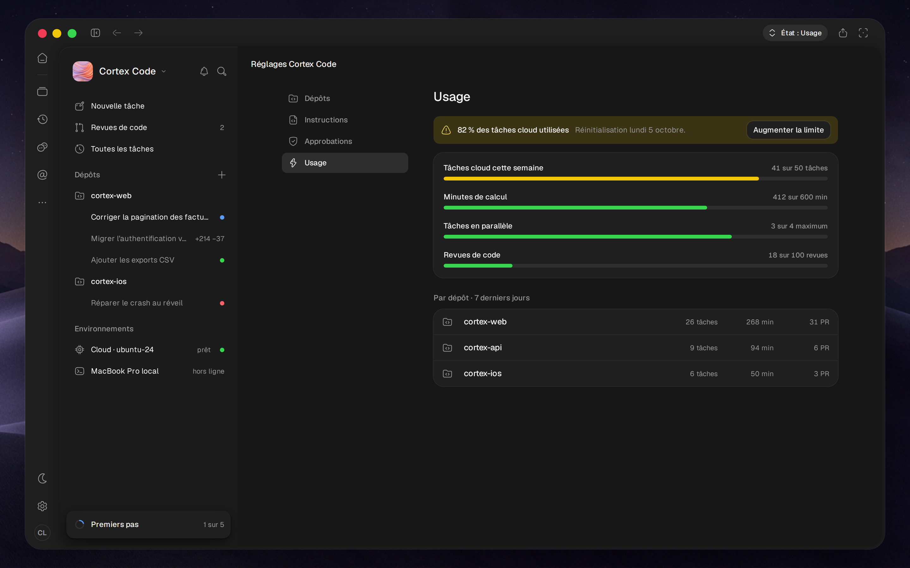

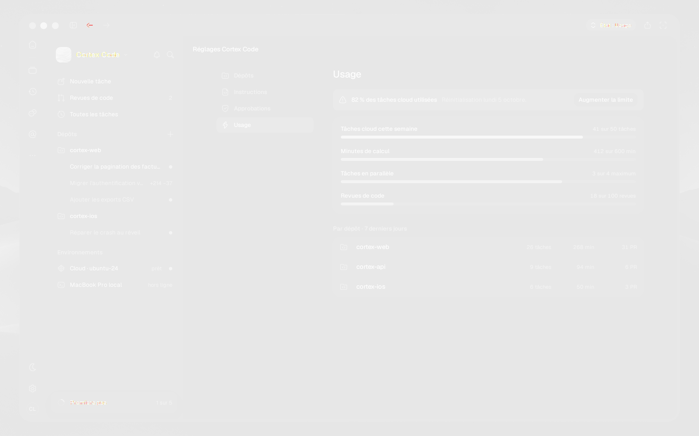

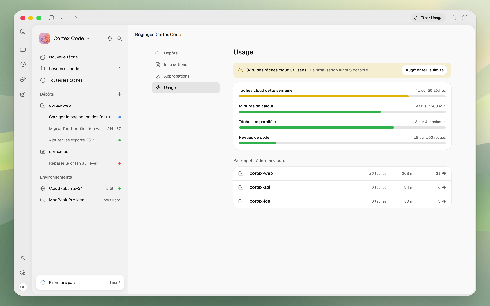


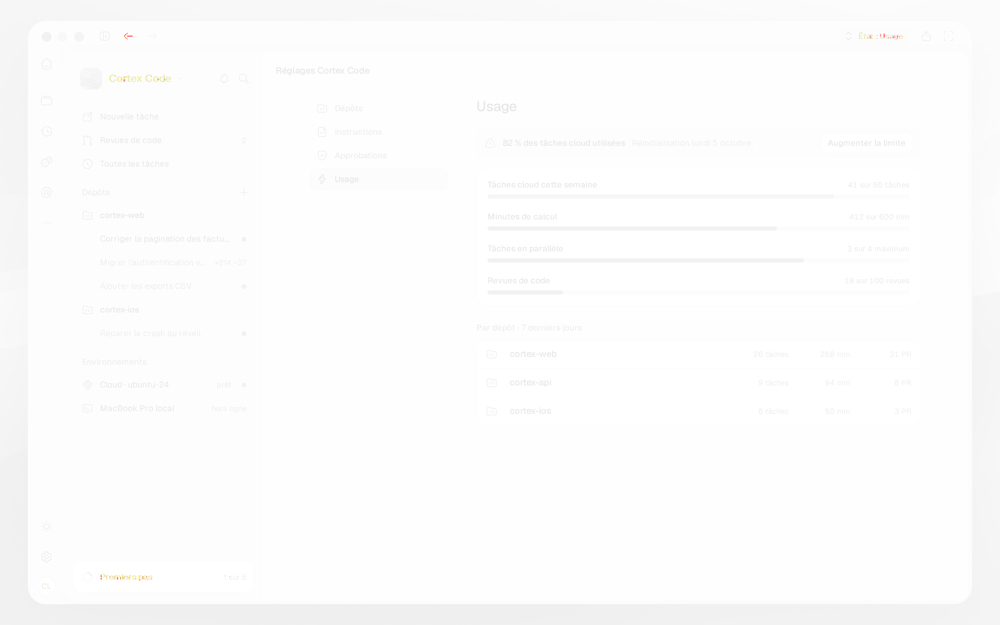
| code-settings~repos-dark 0% |  |  | |
| code-settings~repos-light 0% |  |  | |
| code-settings~instructions-dark 0.02% |  | |  |
| code-settings~instructions-light 0.02% |  | | |
| code-settings~approvals-dark 0.04% |  |  | |
| code-settings~approvals-light 0.05% |  |  | |
| code-settings~usage-dark 0% |  |  | |
| code-settings~usage-light 0.01% |  |  |